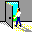

Are you looking for QUALITY sources of information on small business, finance, international trade, entrepreneurship, enterprise development and the economy? |
| | The Knowledge Portal for Small Business | | |
|
|
| All About: |
Entrepreneurship
Understand what it takes to start an enterprise, be an entrepreneur and access resources to help you.
|
Finance
Find out the best resources on banking, finance check, investment, small business financing.
|
Markets
Everything on international trade and exports. Prepare yourself for globalization
|
Competitive Intelligence
Be strategic and learn how to maintain or enhance your competitiveness
|
Management
Best sites on management development and management issues
|
Business Support Services
Identify where to get advice and business support for your small business. Very likely the most important factor for success
|
Business Law
Everything you need to know on business and international trade laws, including intellectual property rights, licenses and patents. |
Policy
Explore different policies for sustainable enterprise development
|
Business Incubators
Everything you need to know on enterprise creation,
business incubators, and self employment initiatives. . |
Cooperatives
an other kind of enterprise: credit unions and cooperatives
|
Donors
Everything you need to know on donor activities, programs and projects .
|
Women
Women in business, women and business. Explore specific resources for women entrepreneurs.
|
| Globalization : everything you need to know on the emergence of global markets. Explore the impact of globalization on small business |
|
 |
| What's New ?: Find out what new sites have been reviewed. On average 15/20 sites are added monthly |
The Enterprise Development Website
is a "Knowledge Portal for Small Business", a one stop window where relevant sources of information are already identified and assessed, so you will save time in accessing what you are looking for
| The focus is on micro-enterprise, small business and medium enterprise development both in developed and developing countries. |
| Europe | Africa | Asia | LatinAm. |
| Find out everything about ENTERWeb's mission and objectives |
| One star to five stars. Check out the criterias used for rating sites. | |
| Did you ever wonder about the history behind the creation of ENTERWeb? | |
| The ENTERWeb index has just been revised and includes 746 sites. |
| Submit a site for potential inclusion and rating in ENTERWeb. Three, four and five star sites win the ENTERWeb Award and can display the corresponding logo | |
| Provide comments and suggestions. Send an e-mail to ENTERWeb and tell us what you would like to see |
 | Check out the sample of the "1000+" sites linking back to ENTERWeb |
|
| All About: |
E-business
All you need to start a successful business on the Web. Best sites on electronic commerce.
|
Education & Training
Find out the best resources on business education and business administration . Includes sites on vocational training.
|
Self-employment
All you need to know for becoming your own boss
|
Social Media
Find out the best resources on the interface between Social Media and Small Business
|
Economics
Understanding economics. Find out the best website sources on economic issues and explore the interface between small business and economics
|
Community development
Local development and social economy. Think global and act local.
|
Microfinance
The new "Hot" topic: microsavings and microcredit for development
|
Environment
Find out on the relationship between enterprise and environment, power cleaning NC initiatives, and more
|
Business security
international business, criminal background screening services and enterprise development research
|
Technology
Learn more on technology development, pax ploom 2, and technology transfer. Including appropriate technology
|
Networks
Business networks and information centres. Browse the best small business guides and meta-indexes
|
Business News
Where to find the most relevant and current investment picks and news
|
| Knowledge Economy : Everything you need to know on the new knowledge based information society | |
|
| If you are an entrepreneur , a small business owner, a civil servant, a social or community development worker, a university professor, a librarian or a student interested in entrepreneurship and enterprise development, you will find ENTERWeb invaluable as an "information gateway" leading you to quality information sources on entrepreneurship, small business, finance, international trade and the economy for both developed and developing countries |
| Français |
Last updated August 19th 2014 |
Copyright ©1996-2014 ENTERWeb The Enterprise Development Website. All rights reserved

|